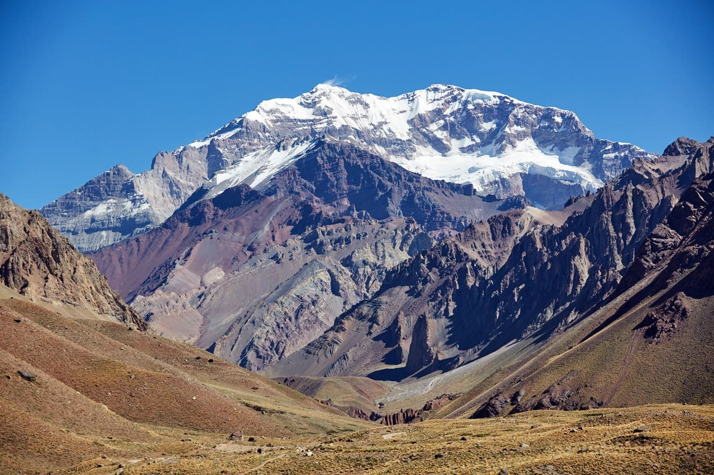
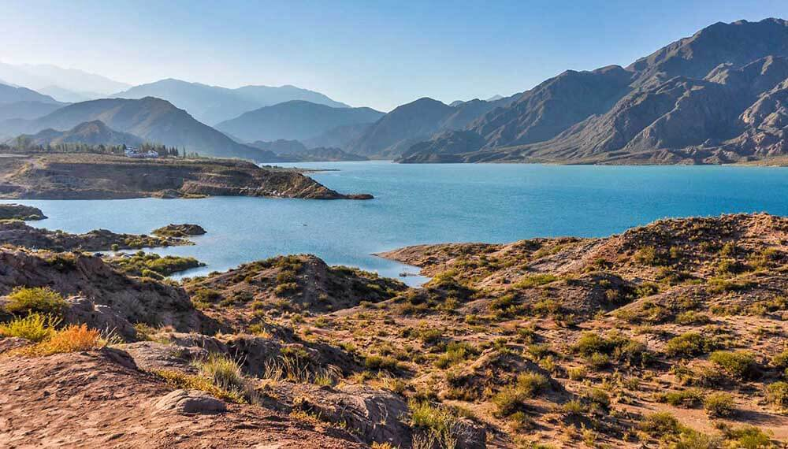
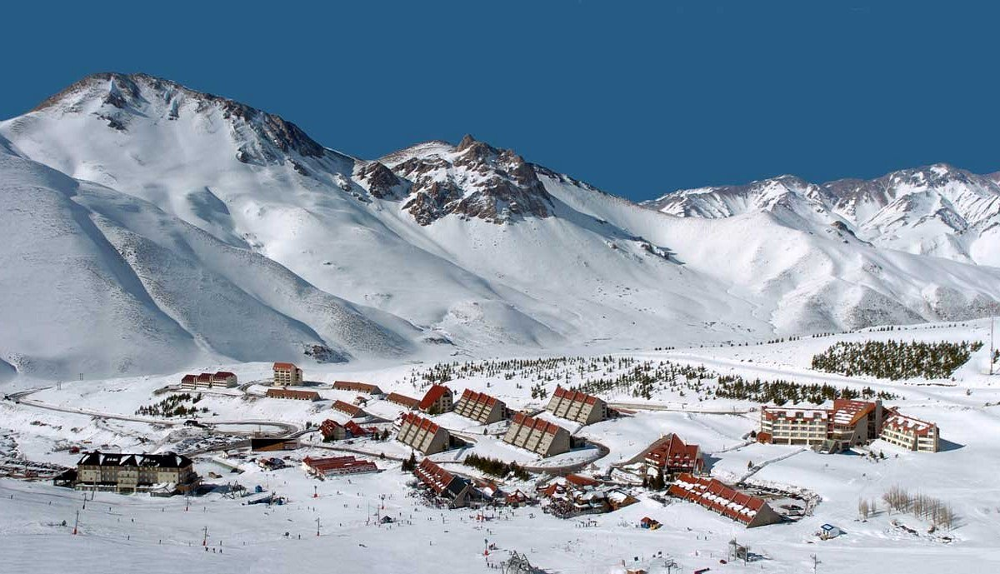
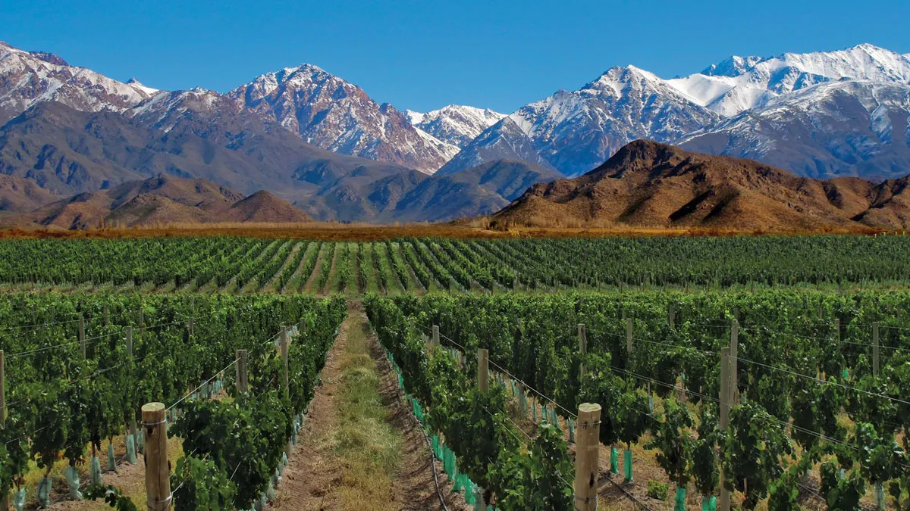
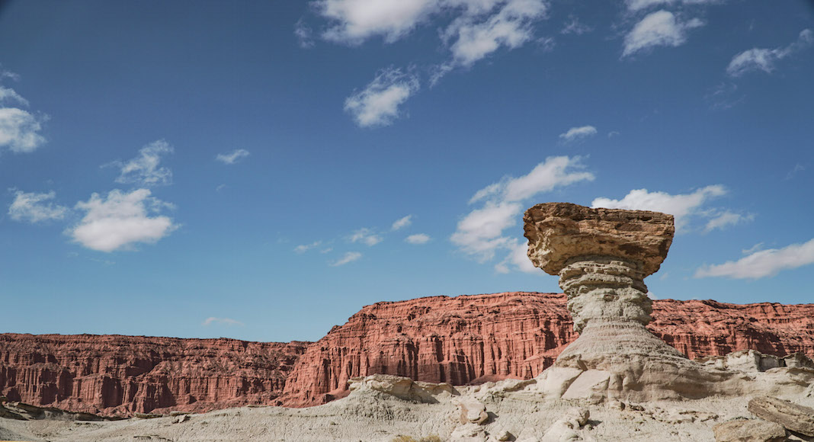
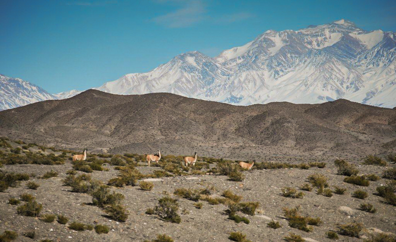
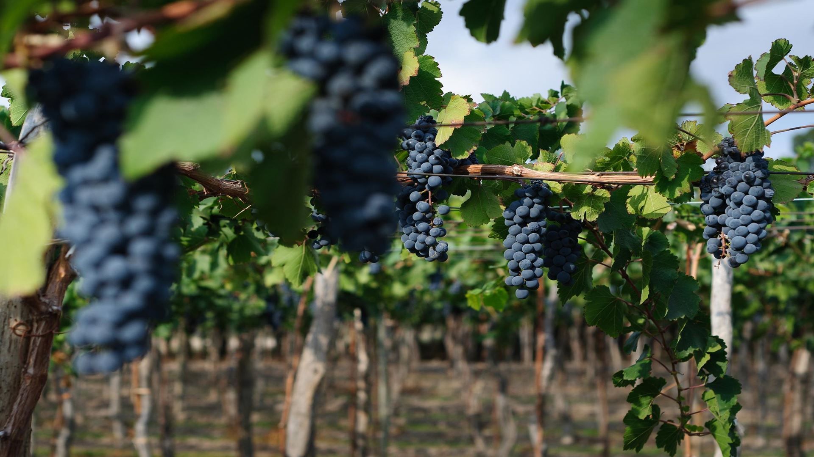
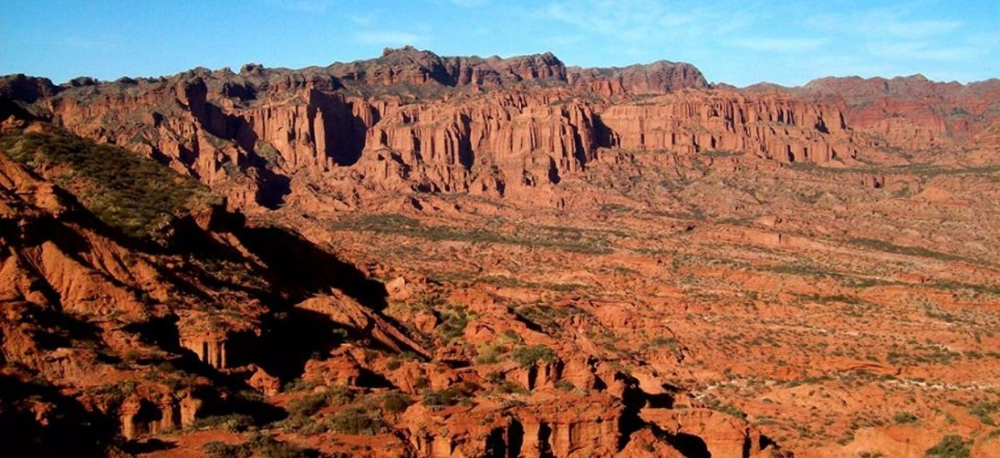
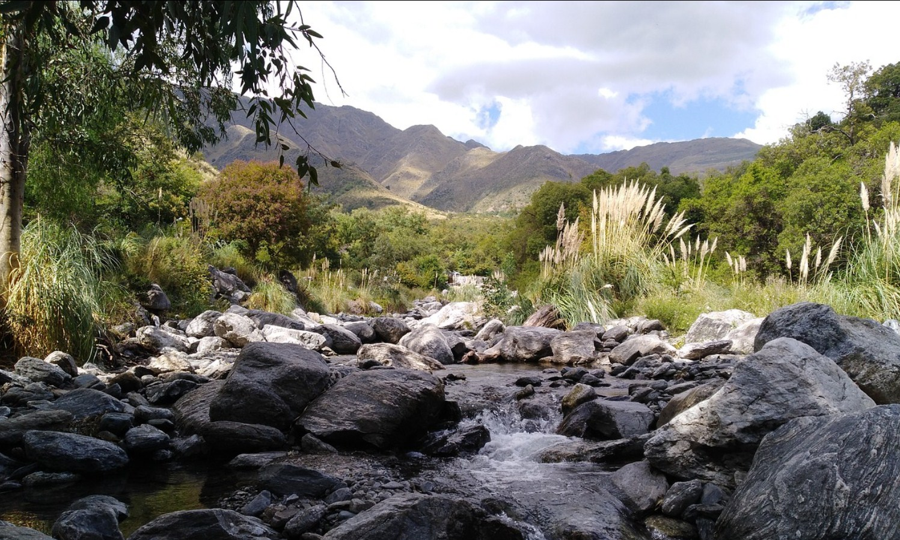
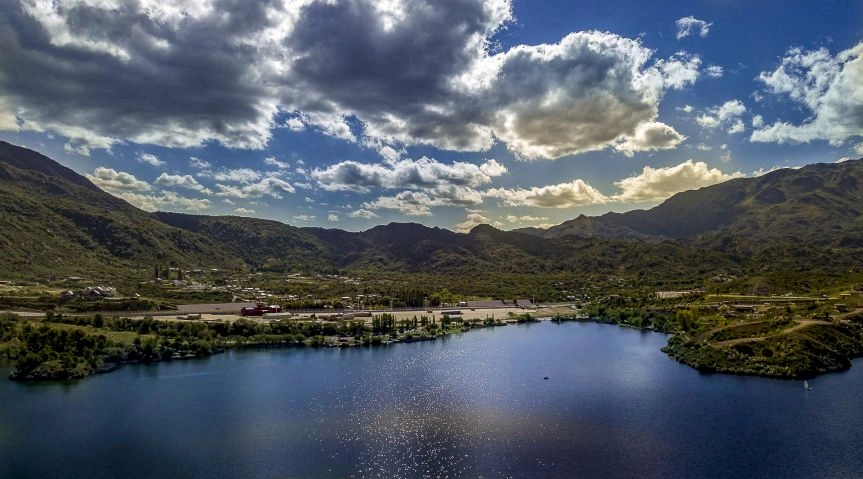

Zona Cuyo
Mendoza
Las rutas de Mendoza están rodeadas de bodegas en todo su camino con una
vegetación llena de olivos.
Recorrer la ruta del vino, degustar los vinos y su oferta gastronómica es una visita obligatoria en
Mendoza.
Lo mejor de todo es poder contemplar la Cordillera nevada, es algo impresionante.
El Aconcagua

Es el pico más alto de América, con 6.962 metros de altura.
El paisaje, el camino y la ruta, son lugares de cuentos; llenos de vegetación y colores
vivos,
con
el Cerro Aconcagua como protagonista.
Potrerillos

Es una localidad de Cuyo inserta sobre la Cordillera de los Andes, en un marco completamente
natural, llena de ríos, montañas, y el famoso dique de Potrerillos que se presta para los
amantes
del turismo aventura.
Para complementar el paseo, cerca del valle están las termas de Cacheuta, el centro de esquí
Vallecitos para el invierno y la localidad de Uspallata.
San Rafael

Para el turismo aventura, lo ideal es viajar a San Rafael. Con ríos
turbulentos que invitan a
practicar deportes acuáticos como rafting, windsurf o kayak; y otros de montañas como rappel
o
tirolesa.
El cañón del Atuel es otra de las atracciones turísticas imperdibles del lugar. Por el río
Atuel
se
puede practicar un rafting relativamente tranquilo, ideal para toda la familia.
Las Leñas

En caso de querer hacer deportes de invierno, Las Leñas tiene uno de los mejores centros de
esquí y
snowboard de la Argentina, que está ubicado en el interior de la Cordillera de Los Andes.
Valle de Uco

La ruta provincial 89 que la recorre es la famosa “ruta del vino”, rodeada de viñedos que te
invitan
a recorrer las bodegas y degustar sus malbec, el varietal más importante del país.
El Valle es ideal para hacer deportes como trekking, cabalgatas y rafting en el río Tunuyán,
ya
que
su cercanía a la Cordillera hace que la naturaleza sea fascinante.
San Juan
Ubicada al noroeste de Cuyo, San Juan combina tierras de colores, cielos estrellados, una pureza
única en el
aire, y una mística que brinda el Valle de la Luna, que hacen cada vez más turística a esta
provincia.
La llaman la “tierra del sol”, ya que es una tierra libre de lluvias, con un clima templado y seco.
El Valle de la Luna

Con hallazgos paleontológicos y una naturaleza de más de 220 millones de años, el Valle de la luna
nos ofrece rocas con formas extrañas y misterios, como: El Gusano, La Cancha de Bochas, El
Submarino, El Hongo, La Esfinge y El Valle Pintado. Con un poco de imaginación en algunos casos,
entenderás el nombre de cada una de ellas al verlas.
Las excursiones en las noche de luna llena son un clásico para los visitantes. La oscuridad y el
silencio hacen que el valle sea aún más místico de lo que es.
Parque Nacional El Leoncito

Ubicado en el departamento de Calingasta, en la Precordillera Andina, el Parque Nacional El Leoncito
se extiende por una llanura ubicada al lado de los Andes, con una variedad natural que contempla
desde cerros, arroyos, cascadas, hasta manadas de guanacos.
Libre de lluvias, su clima es árido y ventoso, por lo cual el cielo suele estar despejado y las
estrellas son las protagonistas del lugar.
Ruta del vino sanjuanino

Al igual que Mendoza, San Juan también tiene su camino del vino, por lo cual pasar por las bodegas
para degustar las distintas variedades del vino sanjuanino son parte del paseo. De hecho, San Juan
es la segunda provincia productora de vinos de la Argentina.
San Luis
San Luis es la provincia que menos turismo recibe en la región de Cuyo, por lo que es un destino
ideal si te gusta salirte de las rutas convencionales. Su naturaleza abarca desde un parque
nacional, espejos de agua, minas, termas, hasta salinas.
Parque Nacional Sierra de las Quijadas

Además de su fantástico paisaje natural, este parque nacional es un sitio arqueológico en el que se
descubrieron restos fósiles y yacimientos históricos, habitado por pueblos originarios como los
huarpes.
En el famoso camino de los Hornillos de Hualtarán, se conservan los hornos que pertenecieron a la
cultura huarpe. También hay otros senderos como el de Flora Autóctona, Los Guanacos, Las Huellas del
Pasado y el sendero Farallones.
Villa de Merlo

Merlo se encuentra en el Valle de Concarán, y está situada a los pies de las Sierras de los
Comechingones, a casi 800 metros de altura sobre el nivel del mar.
La villa es considerada uno de los ejemplos más importantes de microclima en el mundo, y es un lugar
ideal para hacer parapente, por su clima y porque los paisajes lo ameritan; como también otras
actividades al aire libre.
Potrero de los Funes

Este pueblito inmerso en un valle que está rodeado por sierras se encuentra a 187 km de Merlo y a
tan solo 21 kilómetros de San Luis capital.
Con el Embalse Potrero de los Funes como protagonista (uno de los más antiguos de Sudamérica),
ofrece una gran variedad de deportes acuáticos y actividades para realizar al aire libre con
bellísimos paisajes de fondo.